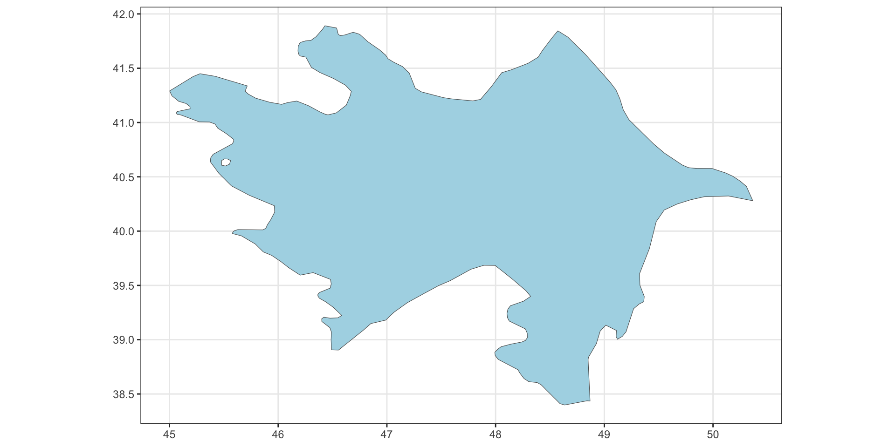

GIS & Geospatial Data Analysis (Fall 2025)
df, sf, pppif and case_when)getwd() and setwd() to get information about working directory the or set them manually to tell R where to look for files during this sessionlibrary() function to load the packages for our R session.uni_df <- tibble::tribble(
~university, ~year, ~current_country, ~lat, ~lon, ~exist_today,
"Paris", 1150, "France", 48.8566, 2.3522, TRUE,
"Salerno", 1173, "Italy", 40.7711, 14.7905, TRUE,
"Reggio", 1188, "Italy", 44.6450, 10.9277, TRUE,
"Oxford", 1190, "United Kingdom", 51.7520, -1.2576, TRUE,
"Bologna", 1200, "Italy", 44.4989, 11.3275, TRUE
)
# uni_df
uni_sf <- uni_df |>
st_as_sf(
coords = c('lon','lat'),
crs = 4326
)
# uni_sf |> mapview(label = 'university')
uni_sfc <- uni_sf |> pull(geometry)ne_vars <- c("geounit", "pop_est", "pop_rank", "pop_year", "gdp_md", "gdp_year", "economy", "income_grp", "iso_a2", "continent", "region_un", "subregion", "region_wb")
cca_sf <- ne_countries(
country = c(
"Kazakhstan", "Kyrgyzstan", "Tajikistan", "Turkmenistan", "Uzbekistan", "Armenia", "Azerbaijan", "Georgia"),
scale = 50) |> select(any_of(ne_vars))
cca_sfc <- cca_sf |> st_geometry()Ways to access function documentation:
?func_namehelp() functionargs() to check[1] "function"function (x, listw, n, S0, zero.policy = attr(listw, "zero.policy"),
NAOK = FALSE)
NULLclass() function tells us that uni_df is a “data.frame” object data object with an additional class `“tbl_df”typeof() call shows the storage mode of uni_df, which is list[1] "tbl_df" "tbl" "data.frame"[1] "list"dim() and colnames()[1] 931 17head(), tail() and slice_sample()| title | book_id | author | date | year | removed | explicit | antifamily | occult | language | lgbtq | violent | state | political_value_index | median_income | hs_grad_rate | college_grad_rate |
|---|---|---|---|---|---|---|---|---|---|---|---|---|---|---|---|---|
| And Tango Makes Three | 143 | Parnell, Peter and Justin Richardson | 2006-10-29 | 2006 | 0 | 0 | 0 | 0 | 0 | 1 | 0 | WV | -7.9 | -7290.0 | -4.361958 | -9.22373 |
| Go and Come Back | 721 | Abelove, Joan | 2000-06-18 | 2000 | 0 | 1 | 0 | 0 | 0 | 0 | 0 | WV | -7.9 | -7290.0 | -4.361958 | -9.22373 |
| When Dad Killed Mom | 1964 | Lester, Julius | 2002-04-21 | 2002 | 1 | 0 | 0 | 0 | 0 | 0 | 1 | WY | -19.7 | 4081.5 | 8.338042 | -2.12373 |
| Geology Book, The | 755 | Morris, Dr. John D. | 2010-05-05 | 2010 | 0 | 0 | 0 | 0 | 0 | 0 | 0 | WY | -19.7 | 4081.5 | 8.338042 | -2.12373 |
| And Tango Makes Three | 143 | Parnell, Peter and Justin Richardson | 2009-08-22 | 2009 | 0 | 0 | 0 | 0 | 0 | 1 | 0 | WY | -19.7 | 4081.5 | 8.338042 | -2.12373 |
| Darkest Night of the Year | 505 | Koontz, Dean | 2007-12-03 | 2007 | 0 | 1 | 0 | 0 | 0 | 0 | 0 | WY | -19.7 | 4081.5 | 8.338042 | -2.12373 |
| title | book_id | author | date | year | removed | explicit | antifamily | occult | language | lgbtq | violent | state | political_value_index | median_income | hs_grad_rate | college_grad_rate |
|---|---|---|---|---|---|---|---|---|---|---|---|---|---|---|---|---|
| Kid’s Guide to Social Action | 1076 | Lewis, Barbara | 2004-08-23 | 2004 | 0 | 0 | 1 | 0 | 0 | 0 | 0 | CA | 7.4 | 10119.0 | -2.761958 | 2.57627 |
| Best is Yet to Come | 221 | Gould, Judith | 2003-11-26 | 2003 | 0 | 1 | 0 | 0 | 0 | 0 | 0 | CO | -0.2 | 10346.5 | 7.338042 | 8.67627 |
| Velderet | 1897 | Tan, Cecilia | 2003-11-27 | 2003 | 0 | 1 | 0 | 0 | 0 | 0 | 0 | CO | -0.2 | 10346.5 | 7.338042 | 8.67627 |
| Magic Eye | 1205 | N.E. Thing Enterprises | 2002-09-17 | 2002 | 0 | 0 | 0 | 0 | 0 | 0 | 0 | OR | 4.0 | 1274.5 | 5.538042 | 1.07627 |
glimpse()Rows: 931
Columns: 17
$ title <chr> "House of the Spirits, The", "It's Not the Stork…
$ book_id <dbl> 927, 1024, 1087, 936, 764, 1087, 1489, 2023, 102…
$ author <chr> "Allende, Isabel", "Harris, Robie", "Pyle, Howar…
$ date <date> 2005-04-01, 2008-02-06, 2008-10-02, 2008-10-05,…
$ year <dbl> 2005, 2008, 2008, 2008, 2008, 2003, 2003, 2003, …
$ removed <dbl> 0, 1, 0, 0, 0, 0, 0, 0, 0, 1, 0, 1, 1, 0, 1, 1, …
$ explicit <dbl> 1, 0, 0, 0, 0, 0, 0, 0, 1, 0, 1, 0, 0, 0, 0, 0, …
$ antifamily <dbl> 0, 0, 0, 0, 0, 0, 0, 0, 0, 1, 0, 0, 0, 0, 0, 0, …
$ occult <dbl> 1, 0, 0, 0, 0, 0, 0, 0, 0, 0, 0, 0, 0, 0, 0, 0, …
$ language <dbl> 1, 0, 0, 0, 0, 0, 0, 0, 0, 1, 1, 1, 1, 0, 1, 1, …
$ lgbtq <dbl> 1, 0, 0, 0, 0, 0, 1, 0, 0, 1, 0, 0, 0, 0, 0, 0, …
$ violent <dbl> 1, 0, 1, 0, 0, 1, 0, 0, 0, 1, 1, 0, 0, 0, 0, 0, …
$ state <chr> "AK", "AK", "AK", "AK", "AK", "AK", "AK", "AK", …
$ political_value_index <dbl> -13.4, -13.4, -13.4, -13.4, -13.4, -13.4, -13.4,…
$ median_income <dbl> 15707.5, 15707.5, 15707.5, 15707.5, 15707.5, 157…
$ hs_grad_rate <dbl> 8.738042, 8.738042, 8.738042, 8.738042, 8.738042…
$ college_grad_rate <dbl> 0.6762701, 0.6762701, 0.6762701, 0.6762701, 0.67…view() tidyverse summary() equivalenttypeof() or mode() we can inspect that uni_sf is stored as using a listst_crs()st_bbox()| university | year | current_country | exist_today | geometry |
|---|---|---|---|---|
| Paris | 1150 | France | TRUE | POINT (2.3522 48.8566) |
| Salerno | 1173 | Italy | TRUE | POINT (14.7905 40.7711) |
| Reggio | 1188 | Italy | TRUE | POINT (10.9277 44.645) |
| Oxford | 1190 | United Kingdom | TRUE | POINT (-1.2576 51.752) |
| Bologna | 1200 | Italy | TRUE | POINT (11.3275 44.4989) |
sf [5 × 5] (S3: sf/tbl_df/tbl/data.frame)
$ university : chr [1:5] "Paris" "Salerno" "Reggio" "Oxford" ...
$ year : num [1:5] 1150 1173 1188 1190 1200
$ current_country: chr [1:5] "France" "Italy" "Italy" "United Kingdom" ...
$ exist_today : logi [1:5] TRUE TRUE TRUE TRUE TRUE
$ geometry :sfc_POINT of length 5; first list element: 'XY' num [1:2] 2.35 48.86
- attr(*, "sf_column")= chr "geometry"
- attr(*, "agr")= Factor w/ 3 levels "constant","aggregate",..: NA NA NA NA
..- attr(*, "names")= chr [1:4] "university" "year" "current_country" "exist_today"Coordinate Reference System:
User input: EPSG:4326
wkt:
GEOGCRS["WGS 84",
ENSEMBLE["World Geodetic System 1984 ensemble",
MEMBER["World Geodetic System 1984 (Transit)"],
MEMBER["World Geodetic System 1984 (G730)"],
MEMBER["World Geodetic System 1984 (G873)"],
MEMBER["World Geodetic System 1984 (G1150)"],
MEMBER["World Geodetic System 1984 (G1674)"],
MEMBER["World Geodetic System 1984 (G1762)"],
MEMBER["World Geodetic System 1984 (G2139)"],
MEMBER["World Geodetic System 1984 (G2296)"],
ELLIPSOID["WGS 84",6378137,298.257223563,
LENGTHUNIT["metre",1]],
ENSEMBLEACCURACY[2.0]],
PRIMEM["Greenwich",0,
ANGLEUNIT["degree",0.0174532925199433]],
CS[ellipsoidal,2],
AXIS["geodetic latitude (Lat)",north,
ORDER[1],
ANGLEUNIT["degree",0.0174532925199433]],
AXIS["geodetic longitude (Lon)",east,
ORDER[2],
ANGLEUNIT["degree",0.0174532925199433]],
USAGE[
SCOPE["Horizontal component of 3D system."],
AREA["World."],
BBOX[-90,-180,90,180]],
ID["EPSG",4326]]pull() tidyverse equivalent for $: input a df, a column name, output a vector[1] "sfc_POINT" "sfc" st_geometry()summary
sf: simple feature collection.| university | year | current_country | exist_today | geometry |
|---|---|---|---|---|
| Paris | 1150 | France | TRUE | POINT (2.3522 48.8566) |
| Salerno | 1173 | Italy | TRUE | POINT (14.7905 40.7711) |
| Reggio | 1188 | Italy | TRUE | POINT (10.9277 44.645) |
| Oxford | 1190 | United Kingdom | TRUE | POINT (-1.2576 51.752) |
| Bologna | 1200 | Italy | TRUE | POINT (11.3275 44.4989) |
sfc: simple feature list-column(Pebesma and Bivand (2023))Rows: 1
Columns: 14
$ geounit <chr> "Azerbaijan"
$ pop_est <dbl> 10023318
$ pop_rank <int> 14
$ pop_year <int> 2019
$ gdp_md <int> 48047
$ gdp_year <int> 2019
$ economy <chr> "6. Developing region"
$ income_grp <chr> "3. Upper middle income"
$ iso_a2 <chr> "AZ"
$ continent <chr> "Asia"
$ region_un <chr> "Asia"
$ subregion <chr> "Western Asia"
$ region_wb <chr> "Europe & Central Asia"
$ geometry <MULTIPOLYGON [°]> MULTIPOLYGON (((44.81719 39...azerbaijan_sfcsfc_MULTIPOLYGON of length 1; first list element: List of 3
$ :List of 1
..$ : num [1:41, 1:2] 44.8 44.8 44.8 44.9 45 ...
$ :List of 2
..$ : num [1:206, 1:2] 48.9 48.8 48.6 48.6 48.4 ...
..$ : num [1:8, 1:2] 45.6 45.6 45.5 45.5 45.5 ...
$ :List of 1
..$ : num [1:9, 1:2] 45 45 45 45 45 ...
- attr(*, "class")= chr [1:3] "XY" "MULTIPOLYGON" "sfg"[1] "sfc_MULTIPOLYGON" "sfc" [1] "list"[1] "matrix" "array" [,1] [,2]
[1,] 45.02363 41.02725
[2,] 45.00205 41.01582
[3,] 44.96904 41.02725
[4,] 44.95889 41.05264
[5,] 44.96143 41.07925
[6,] 44.99434 41.08560
[7,] 45.02109 41.07798
[8,] 45.02871 41.05386
[9,] 45.02363 41.02725azerbaijan_outer_ring <- azerbaijan_sfc[[1]][[2]][[1]]
azerbaijan_inner_ring <- azerbaijan_sfc[[1]][[2]][[2]]
azerbaijan_polygon <- st_polygon(list(azerbaijan_outer_ring, azerbaijan_inner_ring))
azerbaijan_polygon |>
ggplot() +
geom_sf(fill = "lightblue") +
theme_bw()